PWAYMENT Retail
Van nieuw account tot volledige retailoperatie
Hoi Fabrice, Edy en Bart,
PWAYMENT is intussen veel meer dan een kassascherm of een verzameling winkelmodules. Het begeleidt een eigenaar vanaf de eerste accountconfiguratie, brengt de winkel gecontroleerd naar de eerste verkoop en verbindt daarna kassa, betalingen, documenten, voorraad, klanten, webshop, service, team en inzichten in één dagelijkse werking.
PWAYMENT heeft ondertussen ook zijn eigen officiële domein. Wie eerst zelf wil rondkijken, vindt de volledige publieke omgeving voortaan op:
Zelf uitgebreid testen
Er staat een gedeelde Enterprise-demo klaar. Daarmee kunnen jullie de volledige winkelreis verkennen met voorbeelddata.
| E-mailadres | test@pwayment.be |
| Wachtwoord | testaccount12345 |
Open de gedeelde testomgeving →
Liever helemaal eigen gegevens gebruiken? Maak dan hier een eigen account aan →
De demo wordt gedeeld en kan opnieuw worden ingesteld. Gebruik uitsluitend voorbeeldgegevens, nooit echte klant-, betaal- of bedrijfsgegevens.

01Kiezen en meegroeien zonder opnieuw te beginnen
Basis laat een kleine winkel gratis starten. Retail Professional voegt de professionele winkelwerking toe. Enterprise & Ketens brengt daar uitgebreidere rechten, personeel, voorraadsturing, meerdere winkels en contractuele integraties bovenop.
Het plan bepaalt waartoe een winkel toegang heeft. De eigenaar bepaalt vervolgens welke beschikbare werkstromen zijn team dagelijks ziet. Kassa, historiek en dagafsluiting blijven altijd aanwezig.

02Een nieuwe eigenaar wordt echt door de app begeleid
De begeleiding stopt niet wanneer het account is aangemaakt. Tijdens de registratie vraagt PWAYMENT naar het type winkel, het verkoopmodel, de benodigde werkstromen, de bestaande productwereld en de gewenste startroute. Pace legt daarbij telkens uit waarom een vraag wordt gesteld en welke keuze later beïnvloed wordt.

Na registratie neemt de nieuwe winkelbegeleiding het over. Pace kijkt naar de echte winkelstatus en brengt de eigenaar stap voor stap naar een correct kassaticket, logische categorieën, het eerste verkoopbare product en barcode-etiketten.
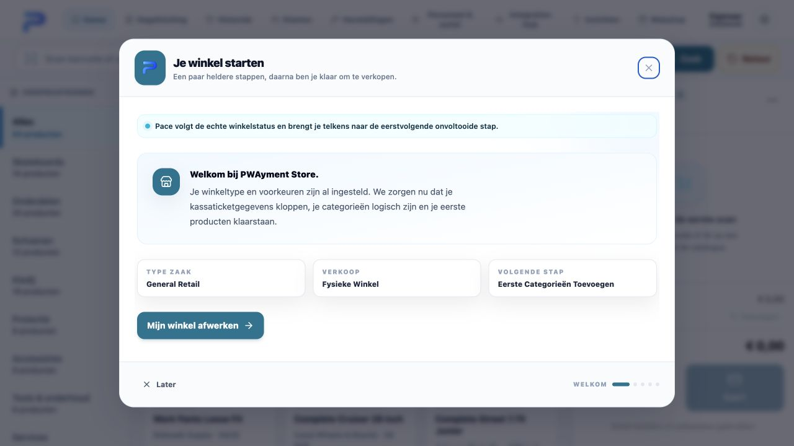
De rondleiding is geen los hulpfilmpje. Zodra de eigenaar een stap opent, blijft een compacte coach naast de echte werkruimte staan. Na het eerste product toont Pace waar het product in de kassa verschijnt en waar prijs, voorraad, barcode en categorie later beheerd worden.
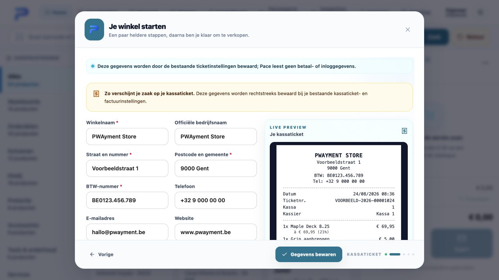
03Bestaande winkeldata meenemen zonder alles opnieuw in te voeren
Voor een bestaande winkel is dit een van de belangrijkste tijdswinsten. De eigenaar hoeft producten, voorraad en klanten niet rij per rij opnieuw op te bouwen. In de Integration Hub kan hij de bestanden gebruiken die hij al heeft: Excel, CSV, TSV of JSON uit een vorige kassa, webshop, ERP, leverancier of eigen administratie.
PWAYMENT scant eerst wat er in de bron zit en stelt daarna een vertaling voor. De eigenaar controleert zelf waar iedere kolom terechtkomt: productnaam, SKU, barcode, categorie, leverancier, aankoopprijs, verkoopprijs, btw, openingsvoorraad, klantgegevens, prijsniveaus en eventuele eigen velden.


Importeren is geen blinde database-upload. Ongeldige of onvolledige rijen blokkeren de activatie. De eigenaar krijgt vooraf een migratiereceipt met aantallen en wat er precies zal worden aangemaakt. Bestaande PWAYMENT-records worden niet overschreven en de eerste migratie kan vóór de eerste live activiteit volledig worden teruggedraaid.

04Een werkplek op maat, zonder essentiële controle te verbergen
Via Profiel → Instellingen → Modules & navigatie kiest de eigenaar welke beschikbare onderdelen zijn team ziet: klanten, herstellingen, personeel en verlof, Integration Hub, webshop en inzichten. De navigatie past zich meteen aan, terwijl planrechten en rolrechten de harde grens blijven.

05De kassa is het operationele hart
De kassamedewerker scant een barcode of ticket, zoekt op productnaam, SKU, categorie of merk en bouwt de verkoop op vanuit een duidelijke productcatalogus. Varianten, voorraad, klantkoppeling, korting, lijnnotities en gesuspendeerde winkelwagens blijven onderdeel van dezelfde korte flow.
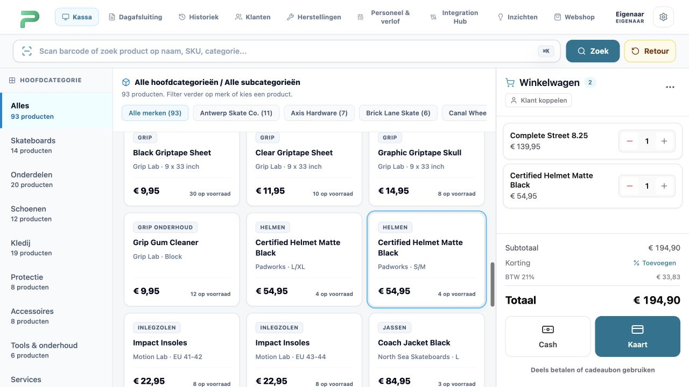
Pace zit in dezelfde werkruimte, maar onderbreekt de betaalflow niet. Het toont context, winkelsetup, synchronisatiestatus en één controleerbare volgende stap. Financiële, voorraad- of gevoelige acties worden nooit zelfstandig uitgevoerd.
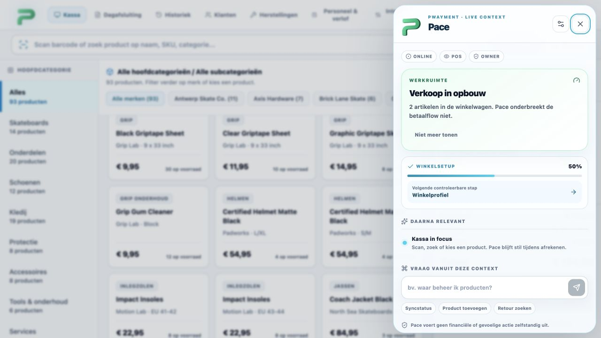
06Twee schermen, elk met precies de juiste informatie
Het optionele klantenscherm draait lokaal in de winkel en volgt de verkoop live. De klant ziet artikelen, btw, totaal en beschikbare betaalmogelijkheden. Kostprijzen, voorraad, interne notities en klantgegevens blijven bewust buiten beeld.

07Betaling, document en retour vormen één keten
Een verkoop kan worden afgerekend met cash, kaart, cadeaubon of een combinatie. Cash toont ontvangen bedrag en wisselgeld. Voor kaartbetalingen is Mollie In-person Payments de primaire geïntegreerde terminalroute: PWAYMENT maakt de betaling server-side aan, volgt de providerstatus en boekt de verkoop pas na bevestiging.
Daarna kiest de medewerker het juiste document. Ticket en factuur bewaren de bedrijfs-, klant-, betaal- en btw-gegevens als een definitieve momentopname.
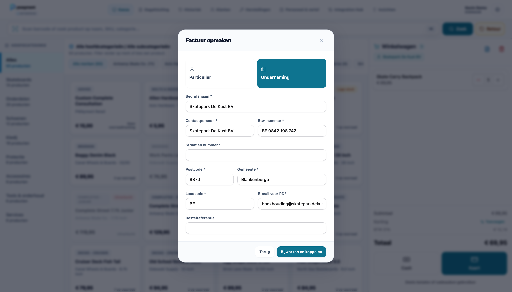
Een retour vertrekt altijd vanuit de oorspronkelijke verkoop. De medewerker scant het ticket, kiest de regels en aantallen, registreert een reden en bepaalt de terugbetaalwijze. De correctie wordt gelinkt aan de verkoop en herstelt alleen de werkelijk teruggenomen voorraad.
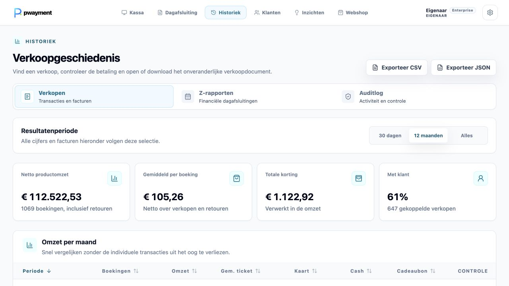
08Dagafsluiting met volledige controle
Voor de definitieve afsluiting toont een voorlopig X-rapport wat nog openstaat. Het Z-rapport legt daarna omzet, cash, kaart, cadeaubon, btw, kortingen en brutomarge vast. Vanuit de historiek blijven de rapporten en onderliggende transacties terug te vinden.
De controleketen blijft intact: verkoop → betaling → document → eventuele retour → dagafsluiting → historiek en audit.
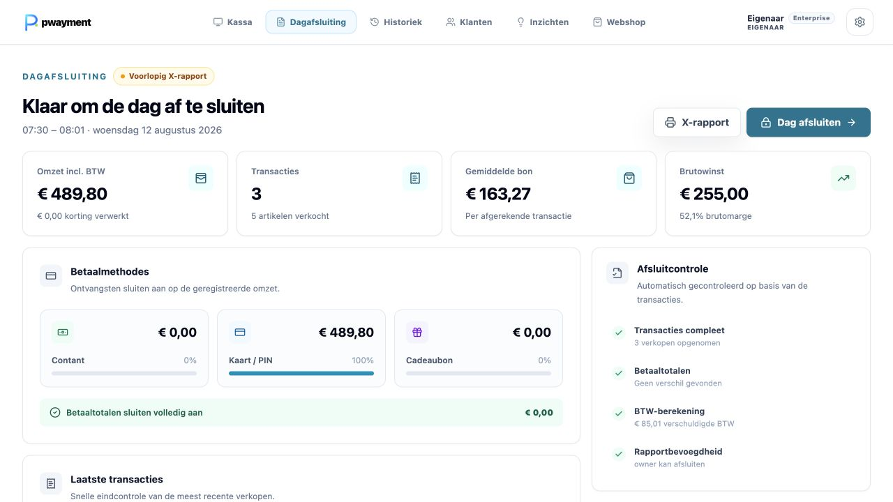
09Catalogus en openingsvoorraad snel en gecontroleerd opbouwen
Producten bestaan niet alleen uit een naam en prijs. PWAYMENT beheert families, varianten, optiecombinaties, SKU’s, barcodes, merken, leveranciers, aankoopprijs, verkoopprijs, btw, voorraad en minimumvoorraad. Producten kunnen worden gearchiveerd zonder hun historie te verliezen en barcode-etiketten zijn rechtstreeks afdrukbaar.
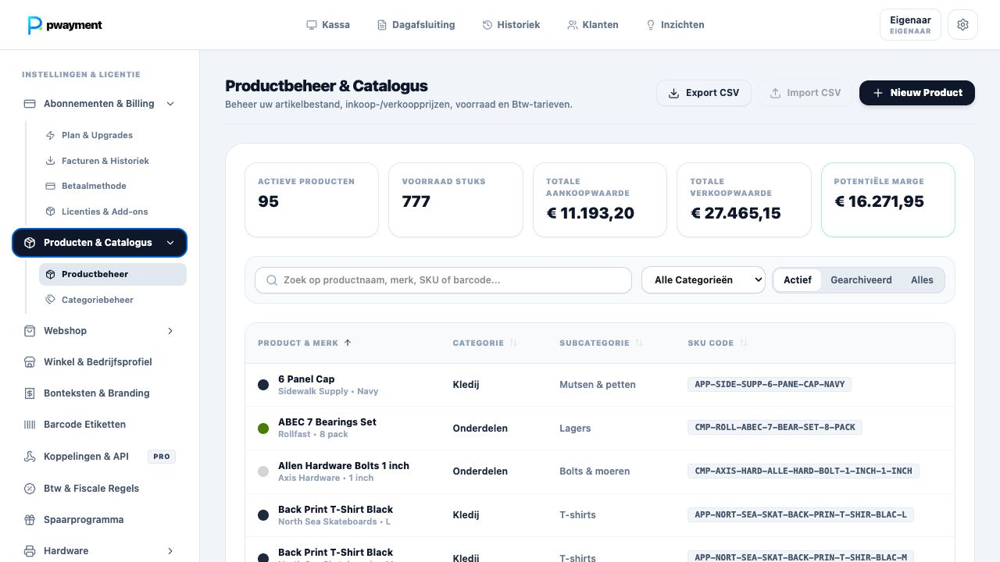
Naast de bestandsmigratie is er een nieuwe snelle invoersessie voor winkels die hun assortiment ter plaatse willen opbouwen. Categorie, subcategorie, merk, leverancier, leverancierscode, minimumvoorraad en btw blijven staan terwijl de eigenaar product na product invoert. Per artikel vult hij alleen nog naam, prijzen, openingsvoorraad, SKU en barcode in. Met Opslaan & volgende gaat hij meteen door; een onafgewerkte sessie wordt als concept hersteld.
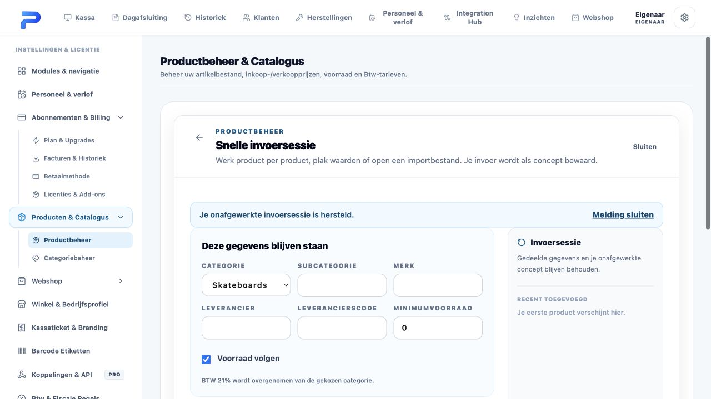
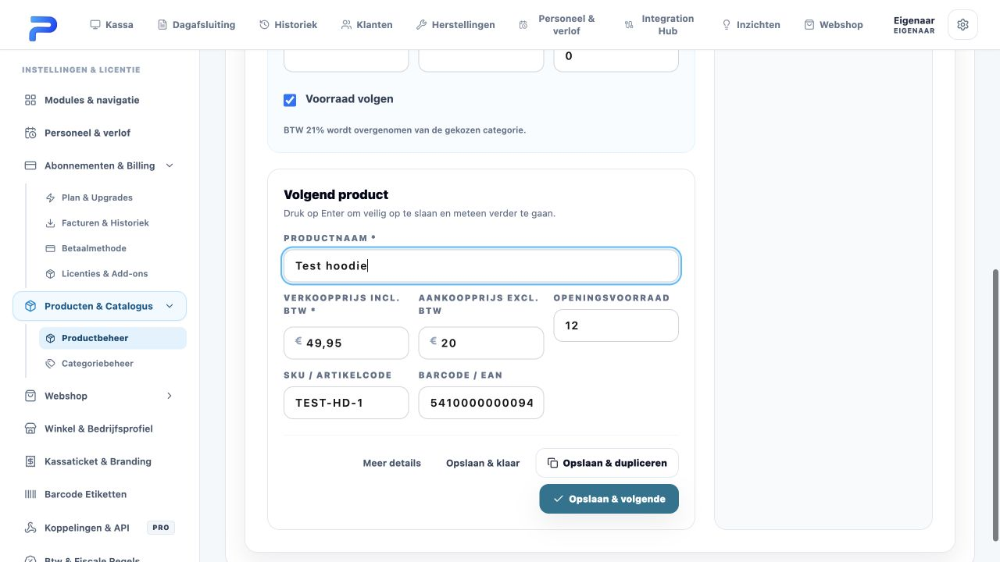
Voor producten met maten, kleuren of andere opties is er daarnaast een variantenmatrix. PWAYMENT maakt de verkoopbare combinaties zichtbaar en bewaart producten, codes, familierelaties en openingsbalansen als één gecontroleerde opdracht. Bestaande voorraad wordt later niet stil aangepast, maar uitsluitend via een fysieke telling, correctie, verkoop, retour, webshopreservering of goederenontvangst.
Vanaf die beginstand ziet de eigenaar verkooptempo, stilstand en geschatte voorraadduur. Geselecteerde besteladviezen worden per leverancier gegroepeerd in conceptorders met bestelaantallen, referentie, verwachte levering en gedeeltelijke ontvangst. PWAYMENT bestelt nooit automatisch.
10Klanten, loyaliteit en cadeaubonnen zijn volwaardige winkelstromen
Klantprofielen brengen contactgegevens, notities, aankopen, retouren, bezoekfrequentie, totale omzet, gemiddelde besteding en klantwaarde samen. De eigenaar kan zoeken, segmenteren en sorteren op gedrag, activiteit en datakwaliteit.
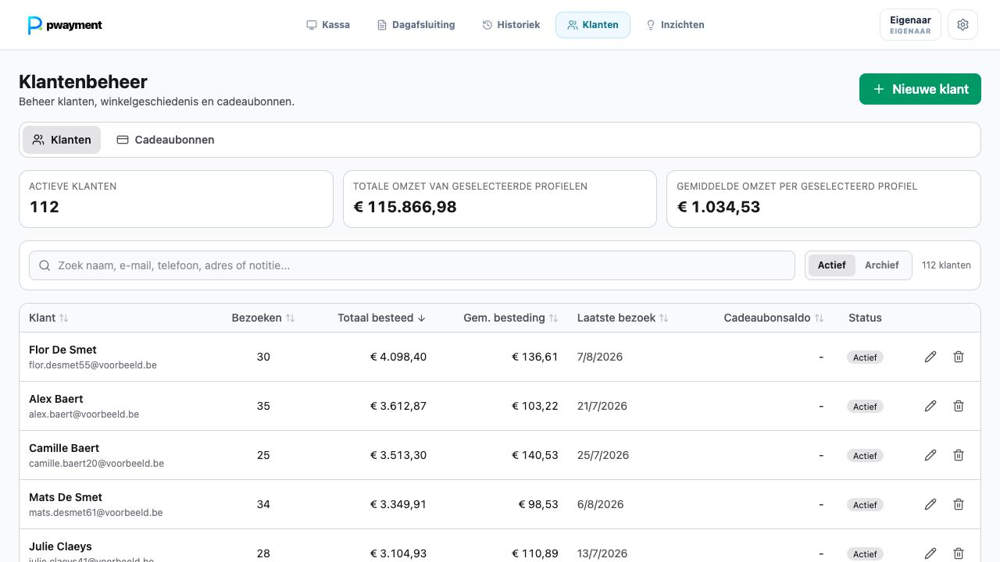
Loyaliteit omvat puntenregels, VIP-niveaus en acties. Cadeaubonnen worden uitgegeven of opgeladen via een geslaagde kassabetaling, kunnen worden besteed, geblokkeerd en hersteld, en bewaren voor iedere mutatie saldo vóór en na.
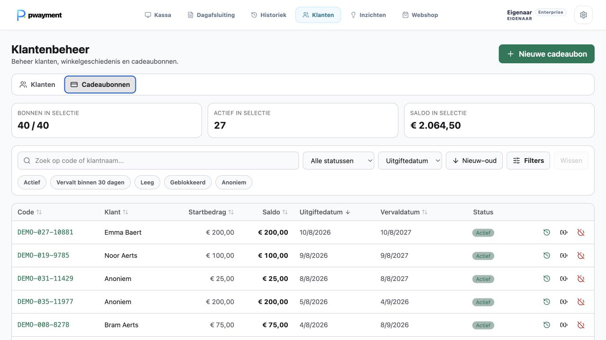
11De webshop gebruikt dezelfde operationele waarheid
De publieke storefront wordt gevoed door dezelfde winkel-, product-, prijs- en voorraadgegevens. De eigenaar beheert branding, assortiment, uitgelichte producten, coupons, levering, gratis-verzenddrempel, afhalen, betaalwijzen en domein vanuit de winkelomgeving.
Bestellingen bewaren orderregels, betaling en voorraadreservering als één flow. Ze kunnen worden bevestigd, verwerkt, verzonden, klaargezet voor afhaling of geannuleerd; bij annulering wordt gereserveerde voorraad gecontroleerd vrijgegeven.
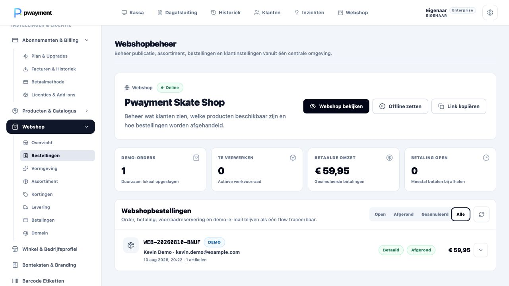
12Inzichten leiden naar een actie, niet naar nog een dashboard
De inzichtenlaag verbindt verkoop, brutowinst, producten, categorieën, verkoopmomenten, kortingen, voorraadtempo, seizoenen, klanten en team. Een eigenaar kan periodes vergelijken en vanuit dezelfde cijfers naar het onderliggende product- of transactiebeeld gaan.
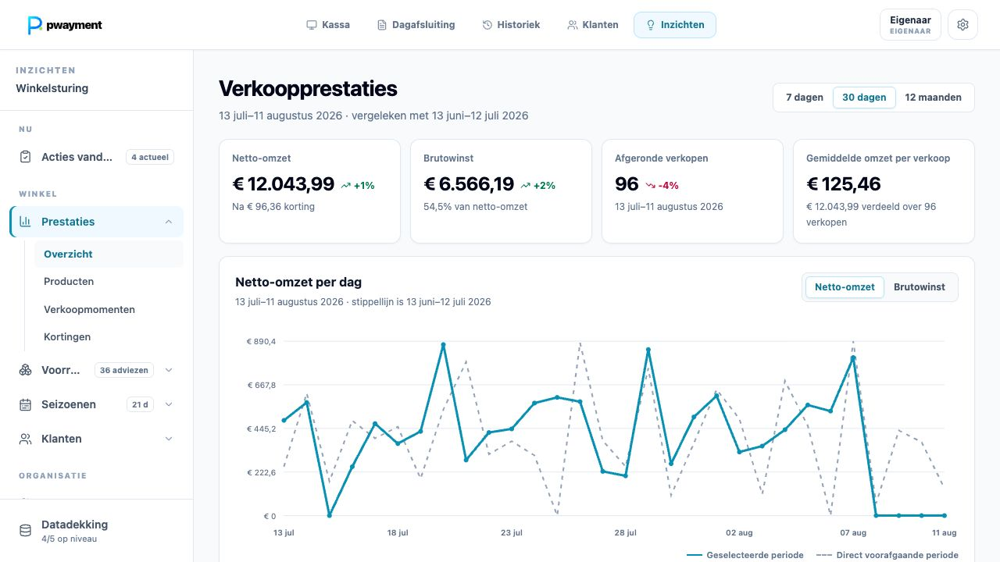
Pace en “Acties vandaag” tonen vervolgens wat aandacht vraagt. Een aanbeveling kan worden geopend, uitgesteld of afgerond, maar verandert nooit automatisch voorraad of een extern systeem.
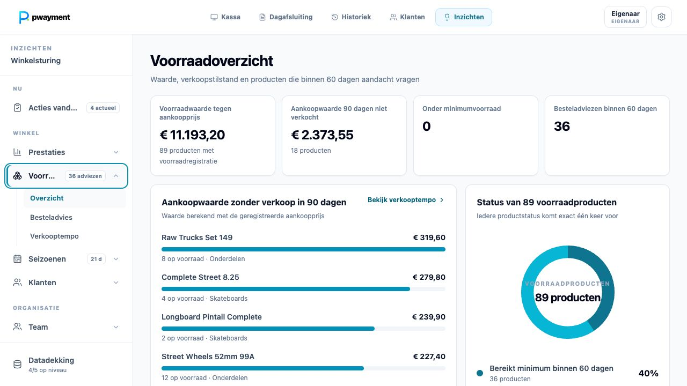
13Herstellingen blijven één dossier van intake tot afhaling
De medewerker koppelt de klant, registreert toestel, serienummer, conditie, accessoires, klacht, foto’s en herstelroute. Diagnose, prijsopbouw, voorschot, interne notities, leveranciersreferentie en klantcontact blijven daarna in hetzelfde dossier.
De klant kan via een beveiligde trackinglink de toegestane status volgen. Wanneer het toestel klaar is, kan de afrekening rechtstreeks naar de kassa.

14Team, planning en verlof vormen een gecontroleerd proces
Medewerkers, rollen, contracturen, beschikbaarheid, competenties, werkpatronen en weekroosters komen samen in één planning. Een verlofaanvraag gebruikt dat werkpatroon om de duur en het effect op de bezetting te berekenen.
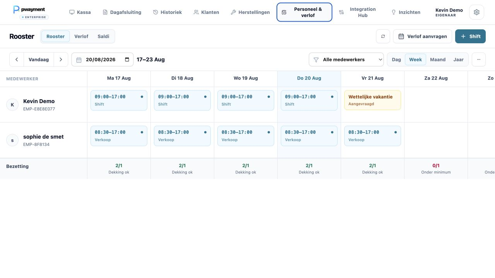
De aparte verlofinbox is alleen voor de eigenaar. Voor goedkeuren of afwijzen wordt het effect opnieuw getoond en is een persoonlijke pincode nodig.

15Ook offline en bij synchronisatieproblemen blijft de winkel bestuurbaar
De PWA houdt per register een offline bruikbare lokale winkelcache bij. Lokale verkopen en wijzigingen krijgen een duurzame synchronisatieroute naar de centrale tenantdata. Realtime updates brengen wijzigingen tussen registers terug naar de lokale werkruimte.
Pace toont of een wijziging wacht, opnieuw wordt geprobeerd of aandacht nodig heeft. Een mislukt item hoeft latere onafhankelijke winkelhandelingen niet te blokkeren. De Integration Hub maakt configuratie, status, test- en synchronisatieruns, operationele logs en deliverytijdlijnen zichtbaar.
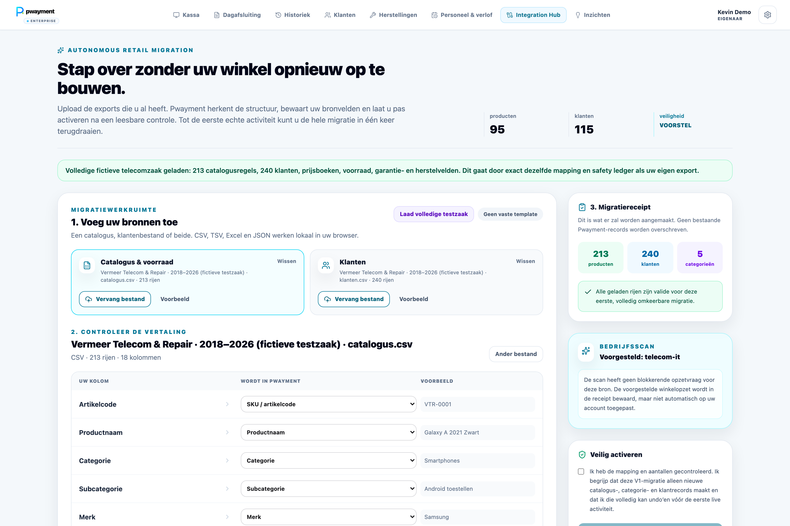
16Centrale ondersteuning wanneer meerdere winkels groeien
De Platform Console is geen extra scherm voor de winkelier, maar onze centrale beheeromgeving voor tenants, winkels, abonnementen, incidenten, releases, development updates, integratieruns, audits en tijdelijke gelogde supporttoegang.

Dat is de volledige productreis die ik wilde tonen: niet alleen starten en verkopen, maar een nieuwe eigenaar begeleiden tot de winkel zelfstandig draait — en daarna iedere verkoop laten doorwerken in betaling, voorraad, klant, webshop, rapportage en de volgende gecontroleerde actie.
Als jullie even tijd hebben, kijk dan gerust eerst op www.pwayment.be of open rechtstreeks de gedeelde testomgeving hierboven.
Groeten,
Kevin